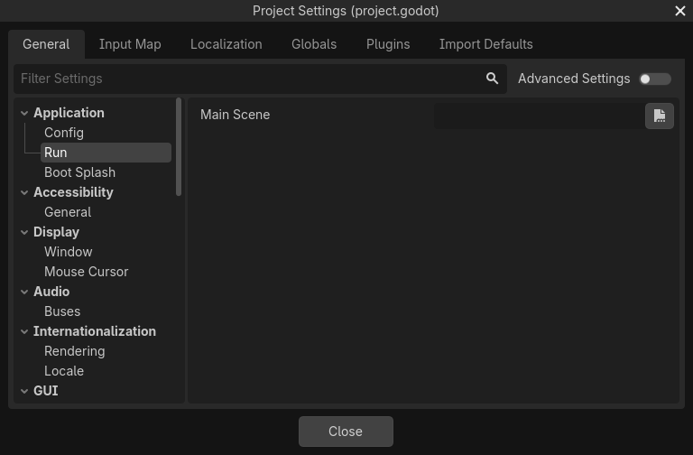

Project Settings
There are dozens of settings you can change to control a project's execution,
including physics, rendering, and windowing settings. These settings can be
changed from the Project Settings window, from code, or by manually editing
the project.godot file. You can see a full list of settings in the
ProjectSettings class.
Internally, Godot stores the settings for a project in a project.godot file,
a plain text file in INI format. While this is human-readable and version control
friendly, it's not the most convenient to edit. For that reason, the
Project Settings window is available to edit these settings. To open the
Project Settings, select Project > Project Settings from the main menu.

The Project Settings window
The Project Settings window is mainly used to change settings in the General tab. Additionally, there are tabs for the Input Map, Localization, Globals, Plugins, and Import Defaults. Usage of these other tabs is documented elsewhere.
Changing project settings
The General tab of the project settings window works much like the inspector. It displays a list of project settings which you can change, just like inspector properties. There is a list of categories on the left, which you can use to select related groups of settings. You can also search for a specific setting with the Filter Settings field.
Each setting has a default value. Settings can be reset to their default values by clicking the circular arrow Reset button next to each property.
Changing project settings from code
You can use set_setting() to change a setting's value from code:
ProjectSettings.set_setting("application/run/max_fps", 60)
ProjectSettings.set_setting("display/window/size/mode", DisplayServer.WINDOW_MODE_WINDOWED)
ProjectSettings.SetSetting("application/run/max_fps", 60);
ProjectSettings.SetSetting("display/window/size/mode", (int)DisplayServer.WindowMode.Windowed);
However, many project settings are only read once when the game starts. After
that, changing the setting with set_setting() will have no effect. Instead,
most settings have a corresponding property or method on a runtime class like
Engine or DisplayServer:
Engine.max_fps = 60
DisplayServer.window_set_mode(DisplayServer.WINDOW_MODE_WINDOWED)
Engine.MaxFps = 60;
DisplayServer.WindowSetMode(DisplayServer.WindowMode.Windowed);
In general, project settings are duplicated at runtime in the Engine, PhysicsServer2D, PhysicsServer3D, RenderingServer, Viewport, or Window classes. In the ProjectSettings class reference, settings links to their equivalent runtime property or method.
Reading project settings
You can read project settings with get_setting() or get_setting_with_override():
var max_fps = ProjectSettings.get_setting("application/run/max_fps")
var window_mode = ProjectSettings.get_setting("display/window/size/mode")
int maxFps = (int)ProjectSettings.GetSetting("application/run/max_fps");
var windowMode = (DisplayServer.WindowMode)(int)ProjectSettings.GetSetting("display/window/size/mode");
Since many project settings are only read once at startup, the value in the project settings may no longer be accurate. In these cases, it's better to read the value from the runtime equivalent property or method:
var max_fps = Engine.max_fps
var window_mode = DisplayServer.window_get_mode()
int maxFps = Engine.MaxFps;
DisplayServer.WindowMode windowMode = DisplayServer.WindowGetMode();
Manually editing project.godot
You can open the project.godot file using a text editor and manually
change project settings. Note that if the project.godot file does not have a
stored value for a particular setting, it is implicitly the default value of
that setting. This means that if you are manually editing the file, you may
have to write in both the setting name and the value.
In general, it is recommended to use the Project Settings window rather than
manually edit project.godot.
Advanced project settings

The advanced project settings
By default, only some project settings are shown. To see all the project settings, enable the Advanced Settings toggle.